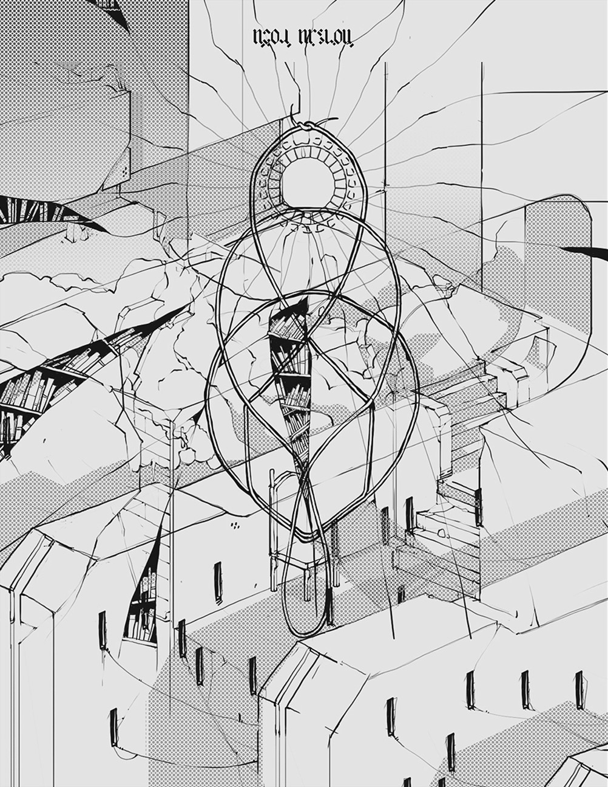
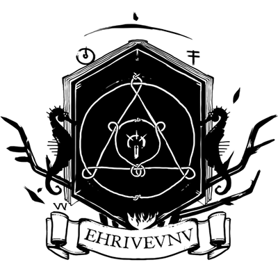

The Neauismetica is a series of vignettes from Dinaisth.
The Neauismetic tales, originally written as "Les Récits De Dinaisth", unfold on a minuscule celestial object drifting through lightless space, on which three travelers dwell. Our story begins once most things have ended, before the silence, the cold and what is left of time, lay claim to the last breath of life.
This series of disjointed concepts, characters and places are the connecting thread that lives through Aliceffekt's music, Devine's illustrations, and are the culture behind the Lietal Language.
Immortals speak not with words, but wait for things to happen, and merely point at them.Neonev
18V11— Completed Drawtober 202413V08— Completed Drawtober 2019
incoming aliceffekt andes castel kanikule neau characters noodle oekaki graf3dscene macintosh identity audio faqs visual faqs